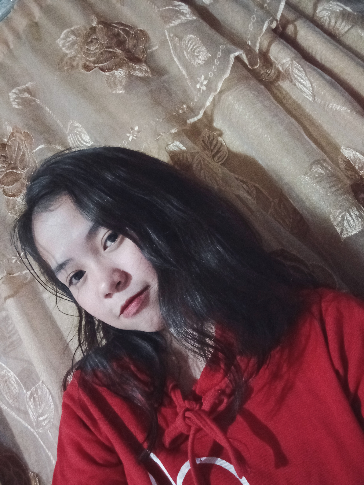

My Profile
Who Am I
I am Jerlyn M. Galisfrancisco, currently in 3rd year college taking Bachelor of Science in Computer Science
at College of Mary Immaculate located in Pandi, Bulacan.
I'm the middle child in our family. Always keeping the positive perspective I have,
because even though bad things are happening in my life,
I don't want to create a negative mentality in myself.
Just be positive at all times. We'll eventually get through it.
In the other hand, as you can see, I choose the image of calm sea as my background because I do love how calm and peace it can give to a person.
Just like the other, how they want to have a peaceful life.
~Favorite Quote~
A journey of a thousand miles begins with a single step.